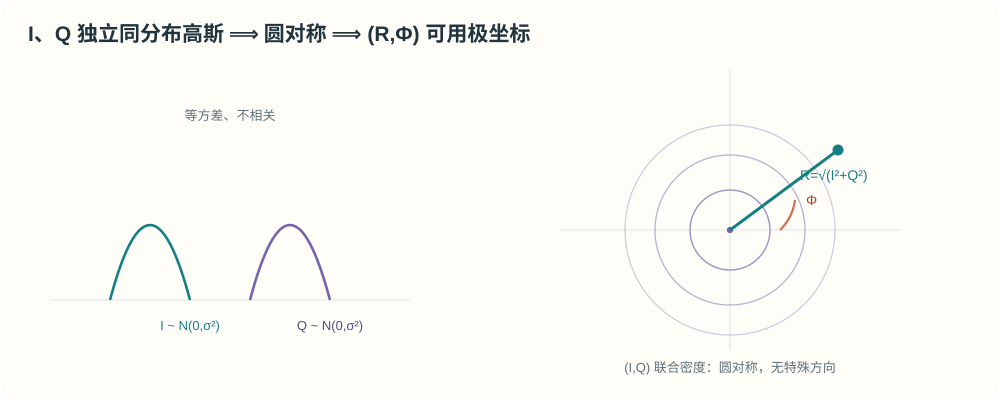
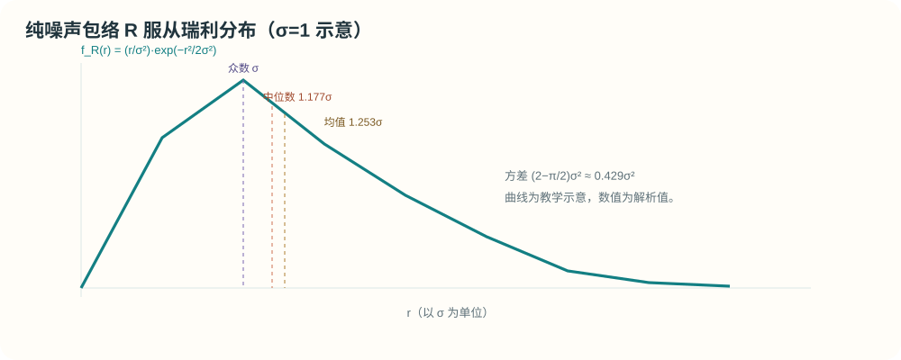
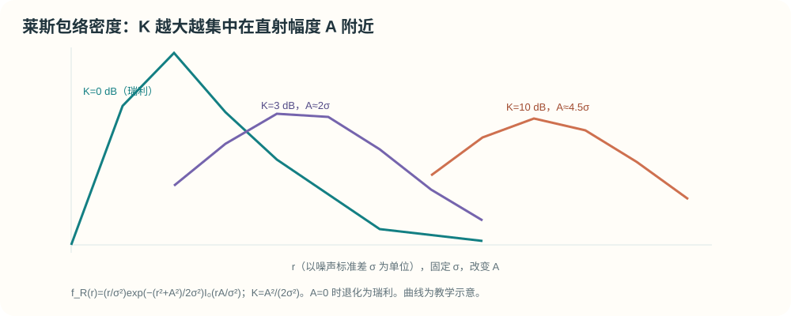
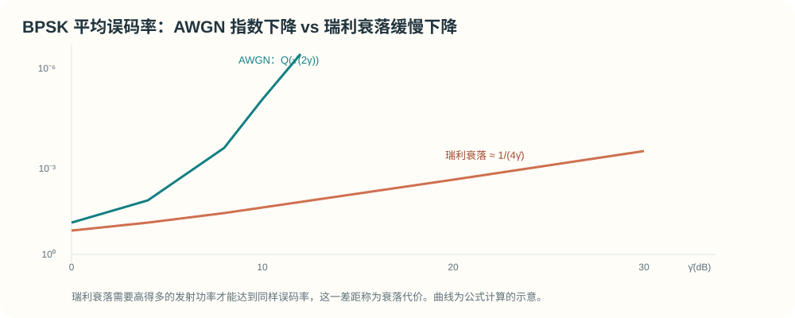

CHAPTER 17 · 系统与模型
窄带高斯信号的包络与相位
把上一章的 I/Q 表示与联合高斯假设合到一起，(I,Q) 就变成两个独立同方差的零均值高斯变量。用极坐标重写这个圆对称分布，包络的瑞利分布、相位的均匀分布以及二者的独立性几乎是“免费”得到的。
- 由 I/Q 的联合高斯推出瑞利包络密度与均匀相位，并说明二者独立
- 写出莱斯分布密度、莱斯因子 K 的定义与极限行为
- 解释瑞利衰落信道的衰落代价，并说明信道模型误选的风险
从 I/Q 到包络与相位
设 n(t) 是零均值平稳窄带高斯随机过程，中心频率 f₀。由第 16 章的 I/Q 表示：
其中 A(t)=√(I²(t)+Q²(t)) 是包络，Φ(t)=arctan(Q(t)/I(t)) 是相位。
关键事实：对零均值平稳窄带高斯过程，固定时刻的 I 与 Q 是两个独立同方差的零均值高斯随机变量，即 I,Q~N(0,σ²) 且 Cov(I,Q)=0。高斯下不相关即独立，所以它们不仅不相关，而且独立。

等方差与独立的前提：I、Q 等方差来自功率谱关于 ±f₀ 对称；“不相关 ⟹ 独立”则依赖二者联合高斯。若谱不对称，I、Q 仍联合高斯但相关，包络分布不再是标准瑞利。
瑞利包络
纯噪声（无信号）时，问包络 R=√(I²+Q²) 的分布，等价于求两个独立同分布零均值高斯变量模长的分布。作极坐标变换 i=r cos φ, q=r sin φ，雅可比为 r，联合密度：
对应累积分布 F_R(r)=1−exp(−r²/2σ²)。它的关键数字特征（σ 为每分量标准差）为：
- 均值：E[R]=σ√(π/2)≈1.253σ
- 中位数：σ√(2ln2)≈1.177σ
- 方差：(2−π/2)σ²≈0.429σ²
- 众数：σ（密度峰值位置）
中位数小于均值，是右偏分布的特征。

物理直觉：当收发之间没有直射路径、只有大量反射/散射时，接收包络近似服从瑞利分布，这就是瑞利衰落模型的基础。
均匀相位与包络-相位独立
把 (17.2) 的极坐标变换进行到底，同时看半径与角度：
右端与 φ 无关，说明相位在 [0,2π) 上均匀分布，且包络与相位相互独立。直觉是：I、Q 独立同方差使联合密度圆对称，没有任何方向特殊，角度自然均匀。
这个独立性很实用：幅度衰落与随机相位可以分开处理。下一章的包络/相位在看衰落时，也是基于这个分解。
信号加噪声：莱斯分布
现假设接收信号含一个确定性正弦与窄带噪声：x(t)=A·cos(2πf₀t)+n(t)。重写为同类形式：
此时 I 分量均值变为 A（信号贡献直流），Q 仍零均值。包络 R=√((A+I)²+Q²) 服从莱斯分布（广义瑞利分布）：
其中 I₀(·) 是第一类零阶修正贝塞尔函数。关键参数是莱斯因子 K=A²/(2σ²)，即直射分量功率与噪声每分量功率之比。

| 特性 | 瑞利（K=0） | 莱斯（K>0） |
|---|---|---|
| 密度 | r/σ²·e−r²/2σ² | (17.5)，含 I₀(rA/σ²) |
| 峰值位置 | r=σ | 靠近 A（K 越大越近） |
| K→∞ 极限 | 不适用 | 包络→确定值 A，相位仍随机 |
| 典型场景 | NLOS、室内散射 | LOS、卫星、微蜂窝 |
K 是经验参数：K 需要由实地信道测量估计，不能凭桌面临界假设“应该有直射”。K 的高估会低估深衰落概率（见下节）。
衰落代价：从包络分布到误码率
以 BPSK 为例，加性高斯白噪声（AWGN）信道中，给定瞬时信噪比 γ 时误码率为 Pe=Q(√(2γ))。但在瑞利衰落信道中 γ 本身是随机的（包络平方正比于功率，瑞利包络平方服从指数分布），平均误码率要对 γ 积分：
对比很残酷：AWGN 下误码率随信噪比指数下降，而瑞利衰落下的平均误码率只随平均信噪比近似线性下降（∝1/γ̄）。达到同样误码率，衰落信道需要高得多的发射功率，这一差距称为衰落代价。

深衰落与信道模型选取：瑞利包络的累积分布为 F_R(r)=1−e−r²/2σ²。以均值为参考，下降到均值 10%（约 −20 dB）以下的概率约 F_R(0.125σ)≈0.78%——看似不大，但在长时间链路中会不断出现。若把实际瑞利信道误当成高 K 的莱斯信道，就会严重低估这些深衰落造成的链路中断概率。K 必须由实地测量估计，而非桌面假设。
可复现核查
下面用蒙特卡罗验证：I、Q 为独立标准正态时，包络的均值与方差符合瑞利解析值，相位在四个象限均匀，且包络与相位样本相关近似为零。仅用标准库，固定种子，可重跑。
import random, math
random.seed(17)
N = 200000
Rs, phis = [], []
for _ in range(N):
I, Q = random.gauss(0, 1), random.gauss(0, 1)
Rs.append(math.hypot(I, Q))
phis.append(math.atan2(Q, I)) # (-pi, pi]
mR = sum(Rs) / N
vR = sum((r - mR) ** 2 for r in Rs) / N
assert abs(mR - math.sqrt(math.pi / 2)) < 0.01 # ~1.2533
assert abs(vR - (2 - math.pi / 2)) < 0.01 # ~0.4292
quad = [0, 0, 0, 0]
for p in phis:
quad[int((p + math.pi) / (math.pi / 2))] += 1
assert 0.24 < min(quad) / N and max(quad) / N < 0.26 # 近似均匀
mP = sum(phis) / N
cov = sum((Rs[i] - mR) * (phis[i] - mP) for i in range(N)) / N
assert abs(cov) < 0.01 # 包络与相位不相关
检查点：实测均值≈1.254、方差≈0.430、四象限频率均≈0.25、协方差≈0，与 (17.2)(17.3) 的解析值一致。测试文件 examples/test_chapter_17.py 复用同一构造。
边界与陷阱
- 独立依赖联合高斯。“ I、Q 不相关就独立”只在二者联合高斯时成立；若只知各自边缘高斯，不相关并不能推出 (17.3) 的分解。
- 等方差依赖谱对称。功率谱关于 ±f₀ 不对称时，I、Q 方差不等且可能相关，包络不再是标准瑞利分布，而是更一般的双变量分布。
- 瑞利/莱斯的取舍要对数据诚实。无稳定直射时用瑞利（最坏情形）；有直射时用莱斯，但 K 必须实测。K 高估会低估深衰落与中断概率。
- 包络分布不告诉你时间相关性。瑞利密度只描述某时刻的幅度分布；衰落速率、相干时间等动态特性由自相关/多普勒决定，不能从边缘密度推出。
- 极限 K→∞ 是理想化。此时包络趋于确定值 A，但相位仍随机；实际信道不可能完全消除散射分量。
下一章转向离散状态的随机过程：马尔可夫链。我们会在离散状态、离散时间上重新建立“无记忆性”与平稳分布的概念。
参考与核查依据
- Wolfram MathWorld · Rayleigh Distribution：瑞利密度、累积分布与矩。
- Wolfram MathWorld · Rice Distribution：莱斯密度与修正贝塞尔函数 I₀。
- S. O. Rice, “Mathematical Analysis of Random Noise,” Bell System Technical Journal, 1944–1945：窄带噪声包络/相位分布的原始推导。
- W. C. Jakes, Microwave Mobile Communications, Wiley, 1974：瑞利衰落信道模型与误码率。
- MIT OpenCourseWare · Principles of Digital Communications I：相干检测与衰落信道误码率背景。